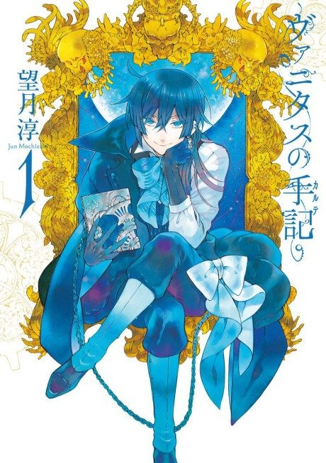
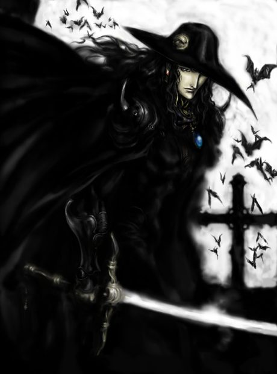

The Case Study of Vanitas
ヴァニタスの手記
In 19th-century Paris, Noé, a vampire, meets Vanitas, a human doctor who wants to cure vampires.
After the anime, read the manga from Chapter 56.
7.8AniList score
—Animeter, no votes yet
24episodes, 2 seasons
Rate it or report where you stopped
2 seasons, 24 episodes
In airing order. Episode numbers on this site count straight through every season, so season 2 starts at episode 13.
1
2021 · TV
The Case Study of Vanitas
Episodes1–1212 ep
2
2022 · TV
The Case Study of Vanitas Part 2
Episodes13–2412 ep
Sources: AniList
More like The Case Study of Vanitas
 Manga Ch. 427.3
Manga Ch. 427.3
 Manga Ch. 1588.2
Manga Ch. 1588.2
 Done8.5
Done8.5
 Original8.1
Original8.1

Manga Film7.9 Done9.0
Done9.0
 Manga Ch. 3408.9
Manga Ch. 3408.9
 Unclear7.6
Unclear7.6
 Manga Ch. 1818.4
Manga Ch. 1818.4
 Manga Ch. 538.3
Manga Ch. 538.3
 Own end8.0
Own end8.0
Original7.1
HIGH CARD